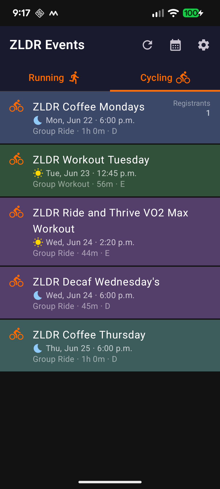
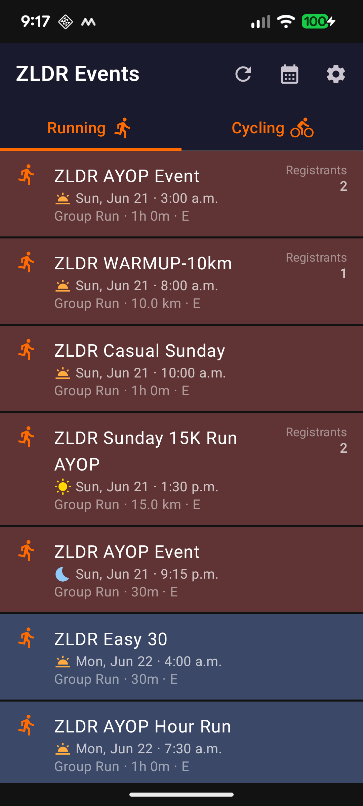
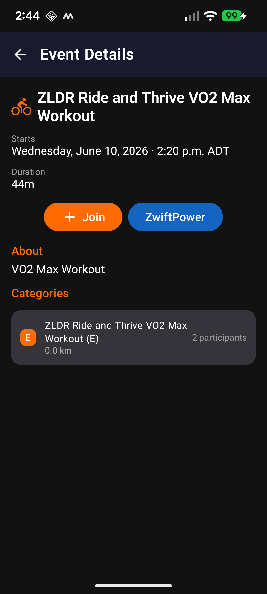
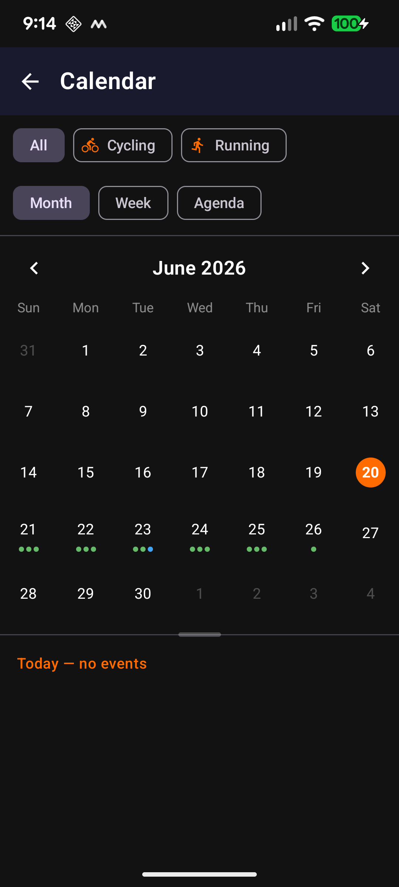
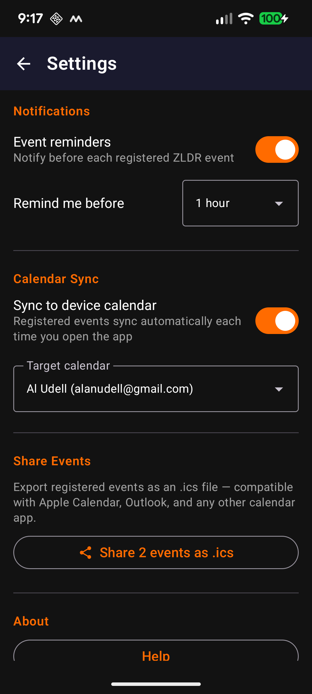

ZLDR Events is a read-only event viewer for members of the ZLDR (Zwift Long Distance Runners and Riders) community. It shows all upcoming ZLDR cycling and running events directly from Zwift, in one place, without needing to hunt through the Zwift Companion app or website.
The app displays:
The first time you open ZLDR Events you will see the sign-in screen. Enter the same username (or email address) and password you use to log in to Zwift.
| Field | What to enter |
|---|---|
| Zwift username or email | Your Zwift login name or the email address linked to your account |
| Password | Your Zwift password — tap the eye icon to show/hide |
Tap Sign in when ready. A spinner appears while the app authenticates. If credentials are incorrect an error message is shown beneath the password field — check for typos and try again.
After signing in you land on the main events screen. Two tabs — Cycling and Running — show upcoming ZLDR events for each sport.


Tap Cycling or Running in the tab bar to switch between sports. Each tab scrolls independently and remembers your scroll position when you navigate back from an event detail.
Each row shows:
Events you are signed up for are highlighted with a gold border and a checkmark badge in the top-right corner. The sign-up count is also shown with a Registered label above it. This lets you spot your events at a glance without scrolling through the full list.
Tap the refresh icon (↻) in the top-right of the app bar to reload events from Zwift. A spinner replaces the icon while loading. The app also fetches fresh data automatically each time you return to the foreground.
Tap the calendar icon in the top bar (left of the settings icon) to open the Calendar screen. See Section 5 · Calendar for full details.
Tap any event in the list to open its full detail screen.

| Field | Description |
|---|---|
| Event name & sport icon | Full title with cycling or running icon |
| Starts | Full date, time, and local timezone |
| Route | Zwift world and route name (when available) |
| Distance / Duration | Kilometres, laps, or timed format as applicable |
| About | Event description from the organiser |
| Categories | Each pen (A/B/C/D/E) shown as a card with distance and participant count |
If you are signed up for the event, a ✓ Registered badge appears at the top of the detail screen.
+ Join Opens the event registration page on zwift.com in your browser. You will need to be signed in to Zwift on the website or in the Companion app to complete sign-up.
ZwiftPower Opens the event on zwiftpower.com in your browser, where you can view category results, rankings, and historical finisher data.
Tap the back arrow (←) in the top-left to return to the events list. Your scroll position in the list is preserved.
The Calendar screen gives you a visual overview of all upcoming ZLDR events. Tap the calendar icon in the events screen top bar to open it.

Three view modes are available via the chip bar at the top of the screen:
The separator position you set in Month or Week view is remembered independently for each — switching to Agenda and back will restore your last position.
The All / Cycling / Running chips at the top of the screen filter which events are shown across all three views.
Events you are signed up for stand out in gold throughout the Calendar:
In Month view, tap the < and > arrows beside the month name to move between months. Tap any date to select it and see that day's events in the panel below.
In Week view, tap the arrows beside the week range to move between weeks. Tap any day in the strip to see its events below.
In Month and Week views, a horizontal separator divides the calendar grid (top) from the event list (bottom). Drag the pill-shaped handle up or down to resize the panels to your preference. The position is saved independently for each view mode, so it is restored when you switch back.
The Agenda view shows all upcoming events in a scrollable chronological list, with sticky date headers. It is the fastest way to read event names and times without navigating between dates. The sport filter applies here too.
Tap the settings icon (⚙) in the top-right of the main screen to open Settings.

Event reminders — When enabled, you receive a local notification before each ZLDR event you are registered for. Toggle the switch to turn reminders on or off.
Remind me before — Choose how far in advance to be notified: options range from 5 minutes up to 1 week. This setting appears when reminders are enabled.
Sync to device calendar — When enabled, all events you are registered for are automatically added to your chosen device calendar each time you open the app. Events you unregister from are removed on the next sync.
Target calendar — A dropdown appears when sync is enabled, listing all writable calendars on your device. Select the calendar where ZLDR events should be added.
Share as .ics — Exports all your registered events as an iCalendar (.ics) file and opens your device's share sheet. The file is compatible with Apple Calendar, Outlook, Google Calendar, and any other calendar app that supports the iCalendar format.
The button is disabled if you have no registered events.
Help — Opens a quick-reference dialog covering the events screen, Calendar, event detail, and Settings.
About — Shows the installed app version, build date, links to the GitHub project and this user guide, and a note about the unofficial Zwift API dependency.
Signed in as — Displays the Zwift username associated with your current session.
Log Out — Signs you out and returns to the sign-in screen. A confirmation dialog is shown first. You will need to enter your Zwift credentials again to use the app.
Clear Cached Data — Removes all locally cached events from the device. The list will reload from Zwift on the next refresh. Use this if event data appears stale or incorrect. A confirmation dialog is shown first.
All event times are displayed in your device's local timezone. If you travel to a different timezone, the times will automatically reflect the change when you next open the app.
Some ZLDR events — particularly group workouts and structured training sessions — do not have a fixed route distance. Zwift publishes these with a distance of zero; this is expected and not an app issue.
If a ZLDR event you expect to see is not listed, try tapping Refresh (↻). If it still doesn't appear, the event may not yet be published on Zwift's public feed, or it may be listed under the other sport tab.
Calendar sync runs automatically each time the app opens. If a recently registered event has not appeared in your device calendar, try closing and reopening ZLDR Events. After the first sync, you may also need to relaunch the Google Calendar app for events to appear.
ZLDR Events is a viewer only. To register for an event, tap + Join on the detail screen — this opens Zwift's website where you can complete sign-up. You can also join directly from the Zwift app or Companion app.
Zwift access tokens expire periodically. The app refreshes them automatically in the background. On rare occasions the session may fully expire, in which case you will be returned to the sign-in screen. Simply sign in again to continue.
An internet connection is required to load or refresh events. Cached data from the last successful load is shown when offline, but the list will not update until connectivity is restored and you tap Refresh.